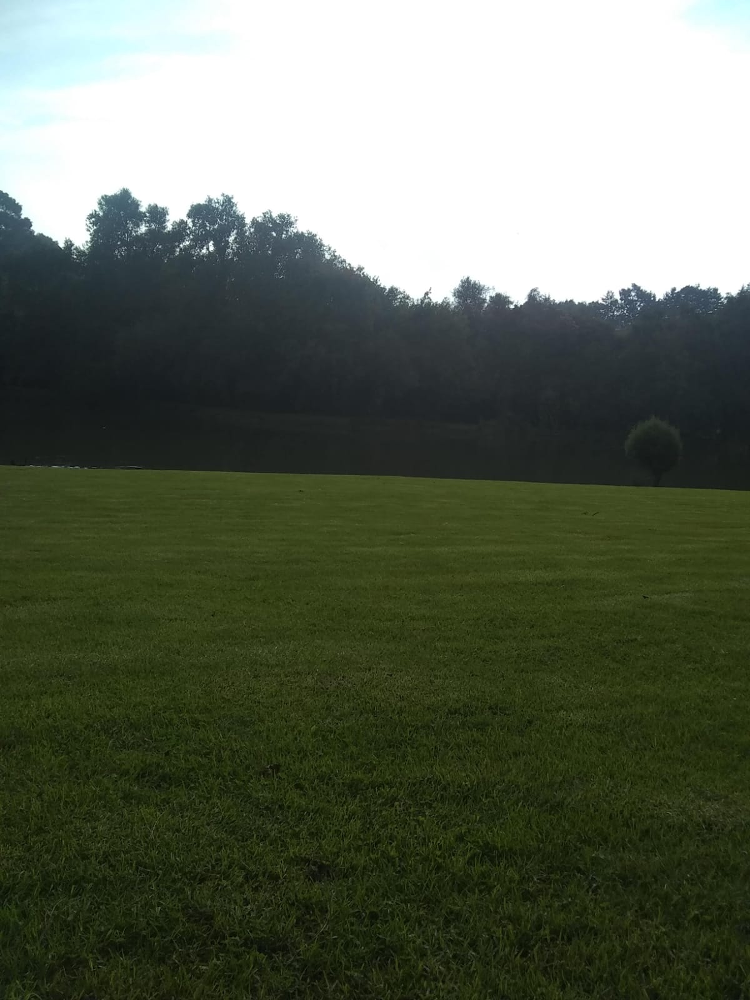

En la zona de el Fresno hay dos lagulas a las cuales tenemos que pedir permiso para poder ingresar,pero son muy conocidas por sus historias de terror o por los accidentes que an pasado tambien son muy conocidas ya que transmiten una tranquilidad muy hermosa,aparte de que te proporciona unas hemosas vistaste aseguro que puedes tomar fotos con un hermoso filtro natural .

El Fresno es una paqueña comunidad rural, que se ubica en Valle de Bravo.
La comunidad cuenta con algulos locales muy surtidos unos de ellos son :